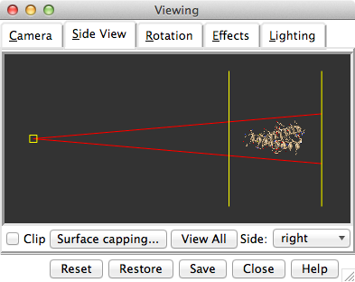
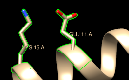
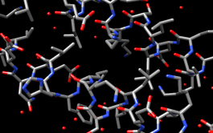
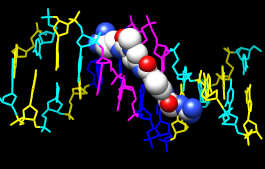
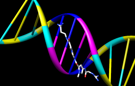

, indicating that something is selected.
, indicating that something is selected.
Many tasks in Chimera can be accomplished in multiple ways. For example, colors and display styles can be changed with the Actions menu or by entering commands. In general, commands are more concise and powerful, but menus allow easy access to features without knowledge of commands and their syntax.
In this tutorial, many of the same tasks performed with menus in the Getting Started Tutorial - Menu Version are carried out using commands instead.
Start Chimera by clicking or doubleclicking the Chimera icon (depending on its location). Typically, this icon will be present on the desktop. The Chimera executable can also be run from its installation location (details...).
A splash screen will appear, to be replaced in a few seconds by the main Chimera graphics window or Rapid Access interface. It doesn't matter which, since opening a structure will switch the display to the graphics window. If you like, resize the Chimera window by dragging its lower right corner.
Use the Favorites menu to show the Command Line. To fetch the structure of entry 1zik from the Protein Data Bank (PDB), use the command:
Command: open 1zik(Alternatively, if you're not connected to the internet, you can save the PDB-format file 1zik.pdb to a convenient location, then use File... Open in the Chimera menu to find and open it.) The structure is a leucine zipper formed by two peptides.
The default initial display is ribbons. To also display atoms:
Command: displayThis shows all of the atoms and bonds in the structure, except that those in the peptide backbone are suppressed by the ribbon display. How to indicate specific parts of a structure for display, coloring, etc. is discussed below. Initially, heteroatoms (atoms other than carbon) are color-coded by element: oxygens red, nitrogens blue, etc. The carbons retain the model color, in this case tan.
Try moving the structure with the mouse in the main graphics window. By default:
Hide ribbons to reveal the backbone atoms, then show ribbons again:
Command: ~ribbonMany commands have “~” versions that perform the opposite function. 
Command: ribbon
Show the Side View for interactive scaling and clipping:
Command: start Side ViewIt is also listed in the Favorites menu by default. It shows a tiny version of the structure. Within the Side View, try moving the eye position (the small square) and the clipping planes (vertical lines) with the left mouse button. The Side View will renormalize itself after movements, so that the eye or clipping plane positions may appear to “bounce back,” but your adjustments have been applied. Continue moving and scaling the structure with the mouse in the graphics window and Side View as desired throughout the tutorial.
When the mouse focus is in the graphics window (you may need to click into it if you have been interacting with a different window), hovering the mouse cursor over an atom, bond, or ribbon segment without clicking any buttons will show identifying information in a pop-up “balloon.” The balloon will disappear when the cursor is moved away. For an atom, the balloon information is of the form:
res-name res-num.chain atom-nameYou can see from the balloons that this structure contains two peptide chains, A and B, and water (HOH residues), also with chain identifiers A and B.
A Chimera command may include arguments and a target (or atom specification). For example, in the following,
Command: color hot pink :lysthe color name hot pink is an argument of the command color, and :lys specifies that the target is all residues named LYS.
A blank specification is interpreted as all applicable items. For example, the following makes everything hot pink:
Command: color hot pink
| Atom Specification Symbols | ||
|---|---|---|
| Symbol | Meaning | Usage |
| # | model | #model (model ID number) |
| : | residue | :residue (residue name or number) |
| :. | chain | :.chain (chain ID) |
| @ | atom | @atom (atom name) |
| = | partial wildcard | matches partial atom or residue name, e.g., @C= specifies all atoms with names beginning with C |
| ? | single-character wildcard |
matches single character in atom or residue name, e.g., :G?? specifies all residues with three-letter names beginning with G |
A basic specification may contain residue names, residue numbers, chain identifiers, and/or atom names (see the table of symbols, right). Note also that commands can be truncated to unique strings.
Command: color yellow :20-22The Chimera Quick Reference Guide (PDF) lists most commands and gives more examples of command-line atom specification. Many other types of specifications can be used, including element symbols and built-in classifications such as solvent:
Command: col gray :20-22.a
Command: ~disp :hoh.a
Command: col cyan :.b
Command: ~ribbon :.b
Command: ~disp :5-10.a,15-20.b
Command: represent sphere @cd2
Command: rep stick
Command: col red :leu.b@ca
Command: ~disp solvent
Command: color blue S
Command: disp protein
The command help can be used to show the manual page for any command:
Command: help colorAs explained in the manual page, the color command also allows coloring only certain representations. For example, “,a” in the following means atoms only (not ribbons, surfaces, etc.):
Command: col gold,a :glu,lysRestore the original coloring:
Command: col tanColoring by heteroatom is useful for showing functional groups, yet keeping different models distinguishable by their different carbon colors.
Command: col byhet
| residue labels |
|---|
|  |
By default, picking from the screen
(a type of selection)
is done by clicking on the atom or bond of interest with the left
mouse button while pressing the Ctrl key.
To add to an existing selection, also press Shift.
Try picking two atoms in different residues (Ctrl-click the
first, Shift-Ctrl-click the second).
The selection is highlighted in green,
and the magnifying glass icon near the bottom right of the window is also green:
, indicating that something is selected.
The word selected, sel, or picked can be used in commands to specify the current selection. Show residue labels for the atoms you have selected:
Command: rlabel sel(The label command shows atom information instead.) The 3D labels from rlabel and label move along with structures and are mainly for interactive use. For figures and movies, 2D labels are recommended instead.
The following command can be used to promote the selection to the entire residues:
Command: select up(The keyboard up arrow also broadens a selection, but you may need to click into the graphics window first to use that approach.) Show only the selected atoms:
Command: show selClear the selection by Ctrl-clicking in empty space, as if picking “nothing.”
| coloring by element |
|---|
|  |
Turn off residue labels, hide ribbon, display all atoms, and color by element:
Command: ~rlabColoring byelement is the same as byhet except it also color-codes carbons (gray).
Command: ~ribbon
Command: disp
Command: col byelement
Generally, each file of coordinates opened in Chimera becomes a model with an associated model ID number. Models are assigned successive numbers starting with 0.
The Active models line right under the Command Line shows which models are activated for motion. Unchecking the box for 0 makes it impossible to rotate or translate model 0 interactively. Checking the box again restores the movable state. A similar row of checkboxes for toggling model display can be shown using the preferences (menu: Favorites... Preferences, category Command Line).
Remove the model:
Command: close 0Go on to Part 2 below, OR exit from Chimera with the following command:
Command: stop
With Chimera started and the Command Line opened as described at the beginning of Part 1, fetch the structure of entry 1d86 from the Protein Data Bank (PDB):
Command: open 1d86(Alternatively, if you're not connected to the internet, you can save the PDB-format file 1d86.pdb to a convenient location, then use File... Open in the Chimera menu to find and open it.)
The structure contains the molecule netropsin bound to double-helical DNA, initially shown with ribbons and stylized representations of the nucleic acid sugars and bases. Move and scale with the mouse in the graphics window and Side View as desired throughout the tutorial.
A preset is a predefined combination of display settings. Apply the “all atoms” preset, which will show the DNA as wire and netropsin as spheres:
Command: preset apply int 2Color carbons white, then undisplay the water:
Command: color white C Residue names can be identified by looking in the Select... Residue menu or by hovering the cursor over an atom or bond to see information in a pop-up “balloon.” Color the different nucleotides different colors, specifying them by residue name:
Command: ~disp solvent
Command: color blue :da
Command: color cyan :dc
Command: color yellow :dg
Command: color magenta :dt
Next, try some different display styles, or representations.
Command: represent sphere
Command: repr bs :.a
Command: rep stick
Notice that commands but not necessarily their keyword arguments can be truncated to unique strings. For example, the command represent can be shortened to repr or rep but not re (because other commands also start with re), whereas its keywords stick, sphere, etc. cannot be truncated. If the truncation is not unique, one of the corresponding commands will be executed, but it may not be the one intended.
Showing ribbon automatically hides the mainchain (backbone) atoms.
Command: ribbon
Command: ribrep edged
Command: ribr rounded
DNA can be shown with special nucleotide objects. We will show “lollipops,” boxes with orientation bumps, and then a ladder. You can copy and paste into the Command Line. The command-line contents can be edited, and past commands can be accessed using the up and down arrow keys or Ctrl-p (previous) and Ctrl-n (next).
Command: nuc side tube/slab shape ellipsoid orient false style skinnyTo return to more general display styles, turn off the nucleotide objects:
Command: nuc side tube/slab shape box orient true style skinny :8-10.a
Command: nuc side ladder radius 0.3
Command: ~nucHide the ribbons and show everything as ball-and-stick:
Command: ~ribbon
Command: rep bs

Finally, have some fun with the surface command. There are built-in categories within structures such as main and ligand; when nothing is specified, surface shows the surface of main.
Command: surfaceSurface color can be specified separately from the colors of the underlying atoms. The ligand surface is tan and white because the original model color (tan) is used for surfaces of atoms not explicitly recolored by the user, and above, only the carbon atoms were changed to white. Show the ligand surface as red mesh:
Command: ~surf
Command: surf ligand
-OR- (equivalent)
Command: surf :nt
Command: surfrep mesh
Command: color red,s ligand
Command: surfrep solid
 Parts of a surface can be shown:
Parts of a surface can be shown:
Command: ~surfSometimes it is helpful to make a surface transparent:
Command: surf :da,dt
Command: ~surf
Command: surf :da.b,dt.b
Command: transp 50,sWhen finished, exit from Chimera:
Command: stop now